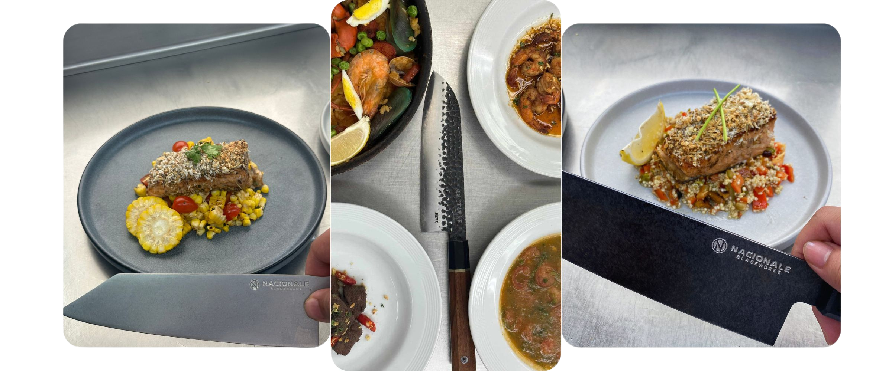

Cucina Things is a vibrant gallery celebrating the world of culinary arts. It showcases a variety of dishes from different cultures, highlighting unique flavors and artistic presentations that captivate the eyes and make your mouth water. Each image is crafted to spark your curiosity and stir your appetite, inviting you to indulge in the sensory delights of global cuisine. Whether you're a food enthusiast or just curious, Cucina Things draws you in with visuals that make you hungry to explore and savor the beauty of diverse culinary traditions!


European Cuisine
Cucina Things: A Taste of Europe
Step into Cucina Things, where the rich flavors and culinary artistry of Europe come to life. This gallery takes you on a gastronomic journey through the continent, featuring an array of dishes that celebrate traditional and contemporary European cuisine. From the delicate pastries of France to the hearty pasta dishes of Italy, and the fresh seafood of Spain to the comforting sausages of Germany, each dish is a work of art crafted to delight the senses. At Cucina Things, we invite you to savor the diversity and charm of Europe's finest culinary creations, all in one place.
Appetizers
Cucina Things: Appetizers
Explore a captivating collection of appetizers at Cucina Things! Our online gallery showcases an array of visually stunning and delicious small bites, celebrating the art of culinary presentation. From vibrant dips to elegant finger foods, each image highlights the creativity and flavors that appetizers can offer, inspiring your next gathering or snack time.
Pastry
Cucina Things: Pastries
Indulge in a curated selection of bite-sized pastries that delight with every flaky layer and buttery crumb. From sweet to savory, our pastries are crafted to bring warmth and comfort to your palate. Whether you crave a classic puff, a delicate tart, or a unique twist on familiar favorites, each piece is made to satisfy and inspire. Explore our collection and let each pastry take you on a journey of rich flavors and textures.
Featured Knives
These two knives are the backbone of every dish, each with a unique purpose that complements the other. The first knife, with its finely honed blade, is perfect for precision work like slicing herbs and delicate ingredients. The second knife, a robust chef's knife, handles the heavier tasks, effortlessly chopping through tougher ingredients with power and control. Together, they bring balance to the kitchen, offering versatility and efficiency to every culinary creation. These knives not only enhance the preparation process but also reflect a commitment to quality and craftsmanship in every dish.
